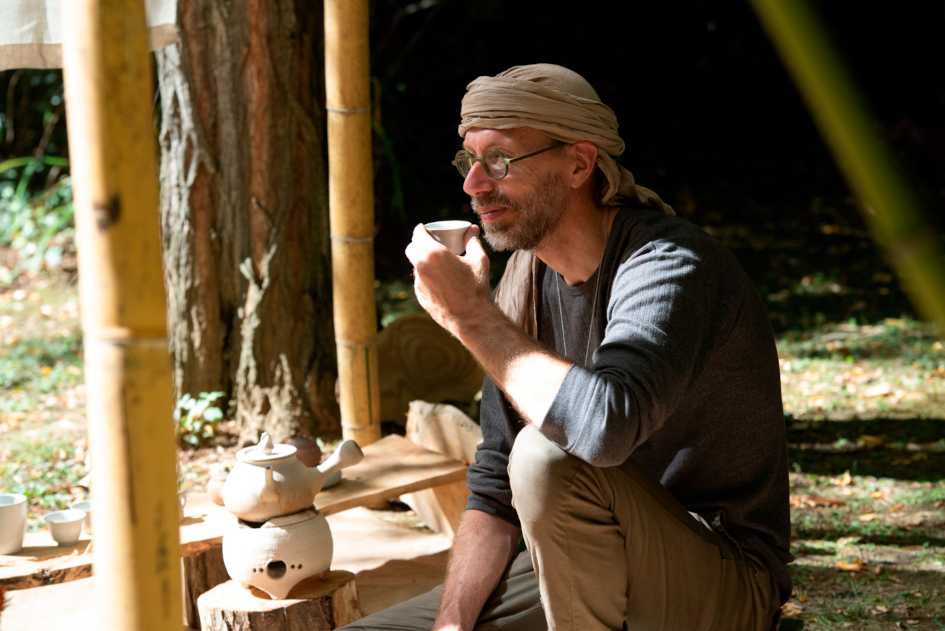

Qui suis-je ?
Jérôme Roussel
Date de naissance : 07 mai 1970
Lieu de naissance : Toulouse
Le fil rouge de ma carrière est l'enthousiasme. J'ai toujours choisi les différentes activités qui jalonnent mon parcours professionnel en faisant confiance à mon enthousiasme et je n'ai jamais eu à le regretter.
Je ne rentre pas dans toutes les cases et c'est très bien comme ça ! Ce CV en ligne est un très bon exemple. Je ne suis absolument pas développeur, mais je voulais un support qui permette de me présenter comme je le souhaite. Alors je l'ai crée !
Je préfère la partie pleine du verre, plutôt que la partie vide.
La recherche de solutions me stimule, donc sans vouloir particulièrement les créer, les problèmes rencontrés se transforment rapidement en opportunités.
J'accorde beaucoup d'importance au climat dans lequel j'évolue. Une ambiance emprunte de bienveillance et de communication, demeure l'idéal. A partir du moment où un rapport de force s'installe, je passe mon tour...
J'aime beaucoup travailler en équipe. Je trouve que c'est une source permanente d'apprentissage et d'inspiration.
Je garde l'esprit ouvert, notamment avec la nouvelle génération qui bouscule pas mal de principes, en apportant une vision nouvelle. A partir du moment ou les arguments sont consistants et logiques, pourquoi ne pas envisager une nouvelle voie ?